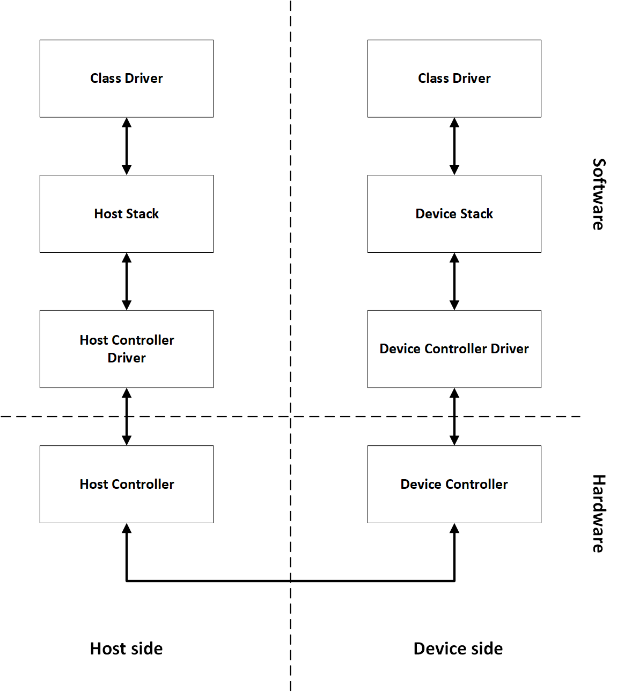

Chapter 1 - Introduction to USBX Host Stack
USBX is a full-featured USB stack for deeply embedded applications. This chapter introduces USBX, describing its applications and benefits.
USBX features
USBX support the three existing USB specifications: 1.1, 2.0 and OTG. It is designed to be scalable and will accommodate simple USB topologies with only one connected device as well as complex topologies with multiple devices and cascading hubs. USBX supports all the data transfer types of the USB protocols: control, bulk, interrupt, and isochronous.
USBX supports both the host side and the device side. Each side is comprised of three layers.
-
Controller layer
-
Stack layer
-
Class layer
The relationship between the USB layers is as follows.

Product Highlights
-
Complete ThreadX processor support
-
No royalties
-
Complete ANSI C source code
-
Real-time performance
-
Responsive technical support
-
Multiple host controller support
-
Multiple class support
-
Multiple class instances
-
Integration of classes with ThreadX, FileX and NetX
-
Support for USB devices with multiple configuration
-
Support for USB composite devices
-
Support for cascading hubs
-
Support for USB power management
-
Support for USB OTG
-
Export trace events for TraceX
Powerful Services of USBX
Multiple Host Controller Support
USBX can support multiple USB host controllers running concurrently. This feature allows USBX to support the USB 2.0 standard using the backward compatibility scheme associated with most USB 2.0 host controllers on the market today.
USB Software Scheduler
USBX contains a USB software scheduler necessary to support USB controllers that do not have hardware list processing. The USBX software scheduler will organize USB transfers with the correct frequency of service and priority, and will instruct the USB controller to execute each transfer.
Complete USB Device Framework Support
USBX can support the most demanding USB devices, including multiple configurations, multiple interfaces, and multiple alternate settings.
Easy-To-Use APIs
USBX provides the very best deeply embedded USB stack in a manner that is easy to understand and use. The USBX API makes the services intuitive and consistent. By using the provided USBX class APIs, the user application does not need to understand the complexity of the USB protocols.